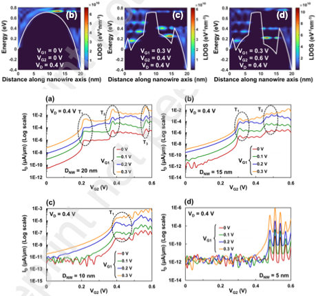

Analytical Modeling of Resonant Tunneling Transport in a Voltage-Induced Double Quantum Dot Channel Nanowire Fet for Multi-Threshold Current Levels
N. Paul, S. Chattopadhyay
2024
Available here

Abstract
The article deals with the modeling of gate voltage controlled resonant tunneling transport in a CMOS compatible double quantum dot channel nanowire FET. The appropriate applied voltages at two separate gates, gate-1 and gate-2 of this device form two voltage-tunable quantum dots underneath the gates, within the nanowire channel. The quantum dot eigenstates are tuned by varying the applied gate voltages to enable voltage-modulated resonant tunneling transport. Such transport is modeled by employing a Schrödinger-Poisson self-consistent framework coupled with non-equilibrium Green’s function (NEGF) formalism. The electron-phonon scattering within the nanowire channel is also considered. The transfer characteristics exhibit multiple threshold currents in the range of 10^-4 μA/μm – 1 μA/μm due to such resonant tunneling. The phonon scattering is observed to significantly depend on the nanowire geometry and applied gate voltages, and tunneling dominated quasi-ballistic transport occurs at higher gate voltages. Also, steep sub-threshold slopes of 45 mV/decade – 8 mV/decade range and transconductance in the 10^-7 μS/μm – 1 μS/μm range at room temperature are obtained by varying the nanowire diameter in the range of 20 nm – 5 nm. Therefore, such device architecture exhibits significant potential for achieving multi-current thresholds in a CMOS compatible architecture at room temperature.
Design aspects of dual gate GaAs nanowire FET for room temperature charge qubit operation: A study on diameter and gate engineering
N. Paul, B. Nag Chowdhury, S. Chattopadhyay
2023
Available here
Alternate version available here
Abstract
The current work explores a geometrically engineered dual-gate GaAs nanowire FET with stateof-the-art miniaturized dimensions (of nanowire diameter and gate seperation) for high performance charge qubit operation at room temperature. Relevant gate voltages in such device can create two voltage-tunable quantum dots (VTQDs) underneath the gates, as well as can manipulate their eigenstate detuning and the inter-dot coupling to generate superposition, whereas a small drain bias may cause its collapse leading to qubit read-out. Such qubit operations, i.e., ‘Initialization’, ‘Manipulation’, and ‘Measurement’, are theoretically modeled in the present work by developing a second quantization filed operator based Schrodinger-Poisson self-consistent framework coupled to non-equilibrium Green’s function (NEGF) formalism. The study shows that the Bloch sphere coverage can be discretized along polar and azimuthal directions by reducing the nanowire diameter and increasing the inter-dot separation respectively, that can be utilized for selective information encoding. The theoretically obtained stability diagrams suggest that downscaled nanowire diameter and increased gate separation sharpen the ‘bonding’ and ‘anti-bonding’ states with reduced anticrossing leading to a gradual transformation of the ‘hyperbolic’ current mapping into a pair of ‘straight lines’. However, the dephasing time in the proposed GaAs VTQD-based qubit may be significantly improved (~10 ns to ~100 ns) by scaling down both the nanowire diameter and gate separation to ~5-3 nm. Therefore, the present study suggests an optimization window for geometrical engineering of a dual-gate nanowire FET qubit to achieve a selective coverage of Bloch sphere for particular information encoding, stability diagram of desired resolution with minimum anticrossing, and an extensively improved dephasing time. Most importantly, such device is compatible with the mainstream CMOS technology and can be utilized for large scale implementation by little modification of the state-of-the-art fabrication processes.